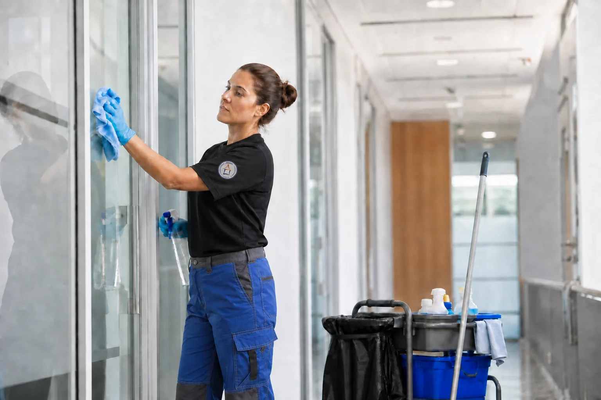

← Zurück zu den Leistungen
HMZ Leistung
Gebäudereinigung
Saubere und gepflegte Räume für Wohnobjekte, Unternehmen, Büros und Praxen.

Unsere Leistungen
- Unterhaltsreinigung
- Büro- und Praxisreinigung
- Treppenhausreinigung
- Glas- und Fensterreinigung
- Grund- und Bauabschlussreinigung
- Teppich- und Polsterreinigung
- Wintergartenreinigung
Reinigungsumfang und Turnus stimmen wir passend zum jeweiligen Objekt ab. Regelmäßige Pflege und einzelne Grundreinigungen können dabei sinnvoll miteinander kombiniert werden.
Interesse an dieser Leistung?
Rufen Sie uns an unter 03304 250784 oder nutzen Sie unser Kontaktformular.